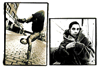

1
Urban Legends Reference Page: Disney
http://www.best.com/~snopes/disney/disney.htm
Did the Haunted Mansion really cause someone to have a heart attack? Does Aladdin encourage teens to disrobe? Is Walt Disney really frozen? The answer to these questions and many more Disney legends are revealed here by urban folklore aficionado David P. Mikkelson, who has painstakingly researched and cataloged over two dozen of the more persistent rumors. For the record, the answers are no, no and no, but as is the case with most urban legends, the fun of this site lies in reading how these tales were started, then spread (for full story behind this month's #1 site, read "Spotlight," page 63).
The World of Rollercoasters
http://www.rollercoaster.com/
The opening paragraph on The World of Rollercoasters home page describes a sensation that every rollercoaster enthusiast would appreciate: the thrill of sitting in the front car, ascending the first steep incline, then hanging over the top waiting for the rest of the train to catch up while the track unfolds before you. This lengthy site is not a static information well, but rather an endless loop of rollercoaster news and announcements combined with amusement park gossip, project updates and new ride highlights. The review section has a database that you can search by park, author or location to get the ups and downs of rollercoasters worldwide. Curious about where to find the fastest coaster? The steepest? It's all here. Complete with FAQ and image gallery.
Enter magazine
http://www.entermag.com
Enter magazine is your guide to shedding your college skin, metamorphosing into an adult and entering the fabled "real world." If you're having trouble leaving the Ramen noodles and work-study gigs behind, jump over to Enter and get the goods on what it means to lease a vehicle, work as a temp, snag an apartment and negotiate a salary. They research those weird jobs that everyone wants and doesn't know how to get (i.e., beer-taster). They even publish recipes for the cooking-impaired. A priceless resource for any hapless twentysomething with a SLIP account and an unemployment check.
NameBase Book Index
http://www.pir.org/
Every so often, a site such as the Public Information Research NameBase reminds us that the 'net can be utilitarian. NameBase is a textual compilation of names, companies and organizations gathered from investigative books published since 1962. This site is for investigators, writers, students and anyone with research needs. The information here can be accessed free via telnet, or a quick-search database on the Web site. If you search online, you will receive a list of books related to your specific key word and a brief summary of each. A useful feature is the counter that displays how many times your term has been searched online during the past week. General category searches are an option if you prefer the deductive method of research. The offline floppy disk version of NameBase will set you back about $80, but the free online version seems to be sufficient for most research. Select articles from NameBase newsline are also included.
Inconspicuous Consumption
http://www.core77.com/beerframe/
Writer Paul Lukas' illuminating essays deconstructing consumer culture have been delighting readers of his 'zine Beer Frame Journal for years. Finally, thanks to the Core 77, a multimedia development company, Lukas' ruminations on Pepperidge Farm white bread, Armour Pork Brains in Milk Gravy and Coors Artic (sic) Ice Beer are available to those who eschew paper. New essays are posted every two weeks, an interminable period to wait for Lukas' unique insight.
the blue dot
http://www.razorfish.com/bluedot/
 the blue dot initially describes itself with a flurry of verbs: "converging growing changing," as well as "rocking feeling seething" and "rotating pulling breathing." If we were forced to pick out a noun, we would call this an experimental gallery, but we'd rather bow to the quirky and kinetic portrait that the site's creators have painted. Exploration will reveal reflective photographic exhibits, digital art and paintings, all by noted artists and ranging in subject from rock icons to gargoyles to unauthorized U.S. postage stamps. The section typoGRAPHIC celebrates the beauty of type and examines its treatment in digital media. the blue dot is dark, brilliant and charming.
The Bonfire of Liberties
http://www.humanities-interactive.org/
Brought to us by The Texas Humanities Resource Center, Bonfire is a heavily graphical interactive look at censorship through the ages. From Shakespeare to Mark Twain to Judy Blume, the list of authors who have been deemed indecent is staggering. There are more than 100 images at the site, including historic covers of banned books, religious paintings depicting book burnings and art once deemed threatening. Each image is accompanied by a brief description, but in most cases, the pictures say it all.
The Easter Egg Archive
http://weber.u.washington.edu/~davidnf/eggframe.html
In the words of the site's intro: "No, this isn't a list of little round, brightly colored ova. In this case, the term ÎEaster Egg' refers to the secret tricks and features that programmers often put into major software releases." With the secrets listed here, we discovered a Doom-like world in Excel and an instant keyboard link to the Netscape FishCam. One caveat: The site is a huge time suck.
The Why Files
http://whyfiles.news.wisc.edu
More Scully than Mulder, the Why Files site explores today's headlines from a scientific view-point. Covering subjects ranging from tornados to forensics to the reliability of political polls, the writing is engaging with plenty of links and snazzy graphics. Another winning feature is the Cool Science Image, a gallery of pictures featuring everything from extinct pollen grains to supernovas. Even if you think you don't like science, you should check out the Why Files for a better understanding of the world around you.
The Land of Pitman
http://www.greyware.com/authors/pitman/
Musings from both the left and right brain of one Mark Pitcavage, a historian and free-lance writer. "Pitman" specializes in the history of the militia in America; his well-written commentaries on various present-day militia groups, such as the Freemen, are worth their weight in Netscape stock. However, Pitman can also shrug off academia and let his fun side show, as you'll see in his inventive lyrics of the imaginary "Nixon: The Musical," in his form with pop-up menus that enable you to sell your soul to Satan over the baudway, and in his ongoing quest for twisted Barbie doll concepts. Accept the randomness and you'll find tons of gripping source material here.